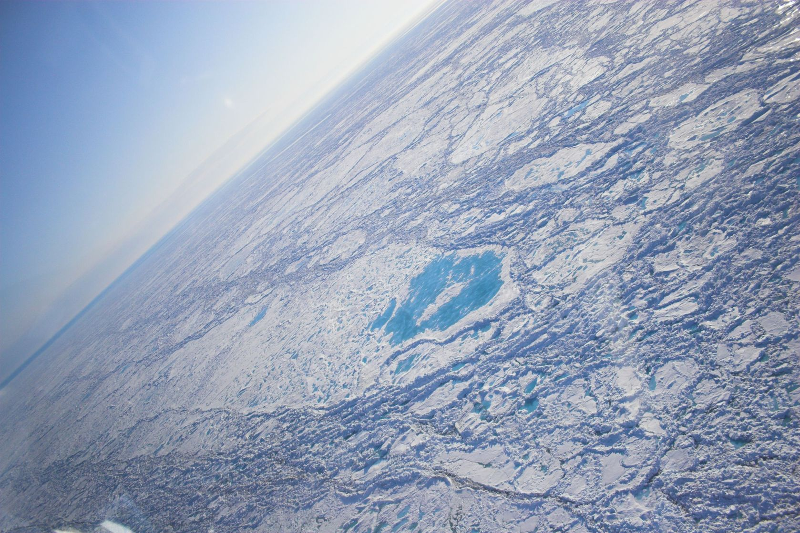

Vi har jobbet med dette i 2 år. Nå kan vi bli de siste i historien som går på ski fra Russland til Nordpolen.
Et historisk ekspedisjon
“Has the Last Human Trekked to the North Pole? Thinning Arctic ice and lack of air support force an end to expeditions this year—and maybe forever.”
National Geographic 2015 (...)
Vi har jobbet med dette i 2 år. Nå kan vi bli de siste i historien som går på ski fra Russland til Nordpolen.
4 kalde fakta om denne unike ekspedisjonen:
Russland - Nordpolen på ski uten etterforsyning
Denne ekspedisjonen kan bli den siste til Nordpolen noensinne.
Noen ekspedisjoner skriver historie om de lykkes. Dette er er en slik en.
Med over 25 år med ekspedisjoner og friluftsliv, er vi klare for den ultimate utfordringen. Dette er mannskapet som skal gjennomføre ekspedisjonen, før det er for sent:
Christian Hager (34): Jobber til daglig som IT-gründer og har blant annet startet selskapet Nabobil.no. Hans lengste tur er Svalbard på langs i 2013. En tur som varte i 30 dager.
Morten Løkken (34): Jobber i Gjøvik Kommune hvor han er avdelingsleder for vegforvaltning. Han er stadig å finne på langtur, vinterstid, alene på norske vidder og fjell.
Vi jobber utrettelig med forberedelser og trening. Det er under ett år til den store reisen skal begynne.
Bli med på denne unike reisen for et lite stykke historie.
For spørsmål om sponsormuligheter, samt informasjon om ekspedisjonen, send en e-post til
Christian Hager.